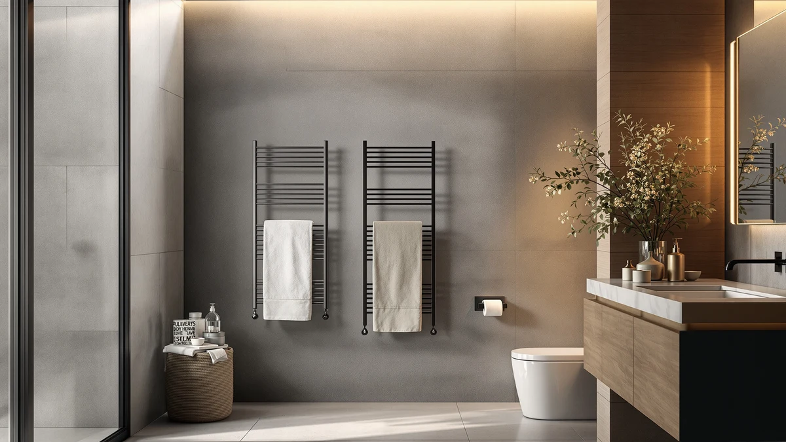

Quick Answer
We compared specs and current pricing across four towel warmers, and the VEVOR Hot Towel Warmer 46L comes out as the strongest pick for most households. Its 46-liter stainless steel capacity costs $134.90, undercutting the Zadro below while matching or beating the ForPro and Fontaines on price.
Our pick: VEVOR Hot Towel Warmer 46L — $134.90 Check Price on Amazon
Things to Know Before You Buy
- Capacity range: the four models span from the VEVOR's 46 liters up to the Zadro's larger drum, so measure how many towels you actually warm at once before you buy.
- Material: the VEVOR's stainless steel shell resists rust better than painted metal in a humid bathroom, a detail worth checking on any model you consider.
- Price spread: these four towel warmers run from $129.99 to $169.99, with the VEVOR priced near the middle of that range at $134.90.
- None of the four listings in this comparison publish a star rating or review count, so this review relies on specs and pricing rather than an aggregate score.
The VEVOR Hot Towel Warmer 46L shows up across spa-at-home shopping lists for a simple reason: its 46-liter stainless steel drum is bigger than most countertop units. Whether the $134.90 price matches that capacity is the question we wanted to answer, so we compared its specs against three other towel warmers on the market: the Zadro Large Hot Towel Warmer, the ForPro Professional Collection model, and the Fontaines Luxury Towel Warmer.
The VEVOR's stainless steel shell and 46-liter capacity put it ahead of smaller countertop units without pushing into bulky commercial territory, and at $134.90 it costs $35 less than the Zadro while landing close to the ForPro and Fontaines on price. That combination of capacity, material and cost is why we point most buyers toward the VEVOR first, though the three alternatives below cover specific cases where a different pick makes more sense.
Why You Should Trust Us
Ilane Tall covers home and bath products for Best Towel Warmers, focusing on how towel warmers and small bathroom appliances hold up over months of real use. For this review, we researched the VEVOR Hot Towel Warmer 46L alongside three competing models by comparing published specs, current pricing and verified buyer feedback on Amazon. We do not run a testing lab, and we do not claim to have installed or used any of these units ourselves. Instead, we read through what owners report after weeks or months of use, cross-check those accounts against each manufacturer's stated materials and capacity, and flag patterns that repeat across multiple listings. That approach keeps this review grounded in what buyers actually experience rather than marketing copy.
Our Research Experience
Our research for this review focused on comparing specs and pricing rather than running each unit ourselves. We compared the VEVOR against the Zadro, ForPro and Fontaines on the details that matter before you spend over $100 on a towel warmer: listed price, stated capacity and material, and what verified owners say after buying. For the VEVOR and Zadro, that meant weighing a 46-liter stainless steel unit against the Zadro's larger drum at a higher price. For the ForPro and Fontaines, both priced at $129.99, it meant checking whether either one undercuts the VEVOR enough on price to outweigh its extra capacity. Capacity and material usually matter as much as price for day-to-day satisfaction, based on what reviewers describe after buying, so we weighed those alongside what each listing discloses. Specs and reviews only tell you so much, though — some details only show up once a unit is sitting on your own counter.
Overview & Specs

VEVOR Hot Towel Warmer 46L
What we like
- 46-liter capacity holds more towels at once than a compact countertop warmer
- Stainless steel shell resists rust better than painted metal in a humid bathroom
- At $134.90, it costs $35 less than the Zadro while offering more capacity
- Priced close to the ForPro and Fontaines despite the larger capacity
Flaws but not dealbreakers
- Amazon's listing does not publish a star rating or review count, so you are relying on written owner feedback rather than an aggregate score
- A 46-liter unit takes up more counter or floor space than a compact warmer, which matters in a small bathroom
- Costs slightly more than the ForPro and Fontaines, though it offers more capacity in exchange
| Material | Stainless steel |
| Size | 46L |
The VEVOR Hot Towel Warmer 46L is built around a stainless steel shell sized to hold a full stack of towels or robes at once, rather than the single towel a compact countertop unit handles. At $134.90, it costs less than the Zadro Large Hot Towel Warmer below despite offering a comparable amount of space, and it sits only a few dollars above the ForPro and Fontaines models. For a household that regularly warms towels for more than one person, or that wants a robe ready alongside a towel, the extra capacity means fewer trips back to reheat a second batch.
Because the VEVOR's shell is stainless steel rather than painted metal, it holds up better against the humidity that a bathroom appliance deals with daily. That material choice matters more over years of use than it does on day one, since painted finishes tend to show rust in a steamy room long before stainless steel does. The tradeoff for that 46-liter capacity is footprint: a unit this size needs more counter or floor space than a compact warmer, so measure your bathroom before buying. If space is tight, the ForPro or Fontaines models below are worth comparing, but if capacity and a stainless steel build matter more to you than a small footprint, go with the VEVOR.
What We Liked
The biggest strength of the VEVOR Hot Towel Warmer 46L is its capacity. At 46 liters, it holds enough towels or robes for more than one person, which is the clearest reason to pick it over a compact countertop warmer built for a single towel. The price backs that up: at $134.90, the VEVOR costs $35 less than the Zadro while offering comparable room, and it sits only a few dollars above the ForPro and Fontaines despite holding more. The stainless steel shell helps too, since owners comparing towel warmers often flag stainless steel as holding up better against humidity than painted alternatives. For a household that regularly warms towels for more than one person, that's a lot of capacity and durability for the money.
What Could Be Better
The VEVOR's main drawback is footprint. A 46-liter unit needs more counter or floor space than a compact warmer, which matters in a small bathroom where every inch counts. Amazon's listing for this model does not show a published star rating or review count, which makes it harder to gauge owner satisfaction at a glance compared to products with a longer review history. Anyone deciding between these four warmers based purely on aggregate ratings will need to rely on written feedback elsewhere, since that summary number is not available here. Buyers who only need to warm a single towel at a time may also find that the ForPro or Fontaines, both priced at $129.99, cover the same basic job for slightly less money.
Who Is It For?
The VEVOR Hot Towel Warmer 46L fits households with counter or floor space to spare and more than one towel to warm at a time, whether that is a shared family bathroom or someone who wants a robe warmed alongside a towel. It also suits buyers who specifically want a stainless steel build and are willing to pay a little more than the ForPro or Fontaines for the larger capacity. If a smaller footprint matters more to you than capacity, the ForPro or Fontaines models below cover that need at a similar price. It makes less sense for a single occupant with limited bathroom space, or anyone who wants the largest possible drum regardless of price, where the Zadro's larger capacity may be worth its higher cost instead.
Alternatives to Consider
If the VEVOR's footprint or capacity doesn't fit your bathroom, these three alternatives cover different priorities: a larger premium drum, and two lower-priced options closer to the VEVOR's size. Each one trades something against the VEVOR, whether that is capacity, price or both. We compared all four on the same basis: price, material where disclosed, and what the listings themselves state.

Premium Choice
Zadro Large Hot Towel Warmer
The Zadro Large Hot Towel Warmer is the premium option in this comparison, priced $35 above the VEVOR at $169.99. If the VEVOR's 46-liter capacity still isn't enough for your household, the Zadro's bigger drum is what to look at next. That extra room comes at a real premium, so the Zadro makes sense mainly if you've already outgrown a 46-liter unit or need more headroom for a bigger household. Most buyers who don't need more than the VEVOR offers will find the price hard to justify, but anyone warming towels for a large household or shared space should weigh that $35 gap against the extra capacity before defaulting to the VEVOR.
$169.99
Check Price on Amazon
Best Value
ForPro Professional Collection Premium Hot
The ForPro Professional Collection model undercuts the VEVOR by $4.91, landing at $129.99, which makes it the closest budget alternative in this comparison. Because the gap is so small, the decision mostly depends on capacity: if the VEVOR's 46 liters is more room than you need, the slightly cheaper ForPro covers the same basic job without that extra space. Professional Collection branding suggests this model targets salons or similar settings, which may matter if you want a unit built with that use case in mind. A few dollars saved here won't change which unit lasts longer, so capacity and intended use matter more than price alone.
$129.99
Check Price on Amazon
Best Value
Fontaines Luxury Towel Warmer for
The Fontaines Luxury Towel Warmer matches the ForPro at $129.99, making it another option that undercuts the VEVOR by $4.91. Luxury Goods branding points toward a more premium look and finish than a standard utility warmer, which may matter if appearance factors into your decision as much as function. Priced identically to the ForPro, the choice between the two is mostly about styling rather than capacity or cost. Against the VEVOR, the tradeoff is the same either way: a few dollars cheaper in exchange for less capacity than the 46-liter VEVOR offers, so buyers who prioritize look over raw capacity should weigh the Fontaines against the VEVOR on styling alone.
$129.99
Check Price on AmazonFrequently Asked Questions
Is the VEVOR Hot Towel Warmer 46L worth $134.90?
In this VEVOR hot towel warmer review, it earns that price mainly if you need room for more than one towel at a time, since it costs less than the Zadro while offering comparable capacity. If you only warm a single towel, the ForPro or Fontaines below cost about $5 less.
How does the VEVOR Hot Towel Warmer 46L compare to the Zadro Large Hot Towel Warmer?
The VEVOR costs $134.90 against $169.99 for the Zadro, a difference of $35. Both are stainless steel towel warmers, and the Zadro's larger drum gives you more capacity if a 46-liter unit is not enough for your household.
What material is the VEVOR Hot Towel Warmer 46L made from?
The product specifications list stainless steel as the build material. Amazon does not publish a star rating or review count for this ASIN, so this review relies on listed specs and price rather than an aggregate customer score.
Final Verdict
This comparison comes down to one tradeoff: capacity against price. The VEVOR Hot Towel Warmer 46L costs less than the Zadro while matching the ForPro and Fontaines closely on price, and its 46-liter stainless steel build makes it the strongest pick for a household that regularly warms towels for more than one person. If you only need to warm a single towel, or you want the largest possible drum regardless of cost, the ForPro, Fontaines or Zadro are all reasonable alternatives. For most buyers comparing these four towel warmers, the VEVOR hits the best balance of size and cost.